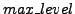
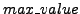
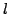
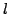
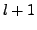
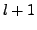

begin
An array  of boolean flags
of boolean flags
 where each
where each
 either takes the value
either takes the value  or
or  .
.
Integer variables  and , initialised to zero.
Variables , and
making up a point in  space.
space.
Another array of boolean flags .
The variables , , , , and array are used to keep track of the best fit as the algorithm proceeds.
Set all the  to
to  .
.
For each disparity point :
begin
Calculate the normalised perpendicular distance
from the plane to the centre of the root cube:
If
the plane passes through
the root cube's circumscribing sphere: set  to
to  .
.
Call the procedure  with arguments as follows:
with arguments as follows:
Procedure  ( array of flags
( array of flags  , array of normalised
distances
, array of normalised
distances  , subdivision level ,
accumulator value
, subdivision level ,
accumulator value  , line of descent list ):
, line of descent list ):
begin
Eight arrays
 of normalised distances.
of normalised distances.
Accumulators for each  , initialised to zero.
, initialised to zero.
Boolean flag  , initialised to
, initialised to  .
.
begin
begin
If then
begin
Set flag to  .
.
Subdivide child cubes receiving greater than or equal to  votes:
If
:
votes:
If
:
begin
begin
begin
Call  with arguments
,
with arguments
,
 , , and extended line of descent.
, , and extended line of descent.
Set flag  to
to  .
.
If  is still
is still  (i.e. no further
subdivision of this cube), test for best fit so far:
(i.e. no further
subdivision of this cube), test for best fit so far:
begin
Set to  .
.
Calculate centre of cube in  space by calling procedure
with the line of descent as argument. The results are
copied into , and .
space by calling procedure
with the line of descent as argument. The results are
copied into , and .
Copy array of flags  into array
.
into array
.
Procedure ( line of descent list ): begin
Set , and to zero.
While line of descent not traversed (i.e. root cube not yet reached):
begin
Replace old values of , and :
Add centre -coordinate of root cube to ( and
and  coordinates of root are zero):
coordinates of root are zero):
At the end of the algorithm is the highest level
of subdivision
reached. This must be greater than or equal to for the fit
to be used. is the highest accumulator value of a
cube at subdivision level , the cube has centre
and these are the best fit plane parameters.
The flags
are  if the
if the  'th disparity
point voted for the winning cube,
and those disparity points constitute the subset of all the points which
best fit a plane, given that the total weight of the points must
exceed
'th disparity
point voted for the winning cube,
and those disparity points constitute the subset of all the points which
best fit a plane, given that the total weight of the points must
exceed  . They and the values of and can
stored for use. More precise estimates of the plane
parameters can be calculated using orthogonal regression.
. They and the values of and can
stored for use. More precise estimates of the plane
parameters can be calculated using orthogonal regression.